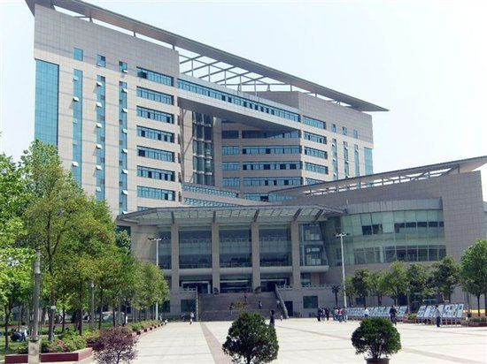

湖北大学简介

湖北大学（Hubei University）坐落于湖北省武汉市，是湖北省人民政府与教育部共建的省属重点综合性大学，入选“中西部高校基础能力建设工程”，是湖北省“2011计划”牵头高校，武器装备科研生产二级保密资格高校，中国政府奖学金来华留学生和港澳台学生接收高校，是教育部和英国大使馆批准设立的湖北省唯一的雅思（IELTS）考试考点单位。
截至2017年10月，湖北大学有武昌主校区、汉口校区、阳逻校区等3个校区和1个大学科技园，总占地面积2100余亩。校舍总建筑面积71万平方米，资产总额25.12亿元，其中固定资产12.1亿元、教学科研仪器设备总值近3亿元。图书馆总面积4.73万平方米，馆藏纸质文献235.63万册，电子图书总量289.25万册，中外文数据库286个。学校有在校全日制本专科生1.9万余人，博士、硕士研究生5600余人。设有18个学科性学院，本科专业80个。有5个博士学位一级学科授权点、41个博士学位二级学科授权点、6个博士后科研流动站，22个硕士学位一级学科授权点、145个硕士学位二级学科授权点，14个硕士专业学位授权类别。
历史沿革
一、湖北省立教育学院（1931秋-1936夏、1941秋-1944春）
湖北大学的历史可以追溯到1930年的湖北省立乡村师范学院。1930年，湖北省教育厅厅长黄建中先生着手筹建湖北省立乡村师范学院，校址即今武昌沙湖之滨的宝积庵。
1931年，湖北乡村师范学院改立为湖北省立教育学院，黄建中兼任第一任院长。学院开办时，设两系一科，即农事教育系、乡村教育系和乡村师范专修科。1932年增设民众教育专修科，1935年又增设农事教育专修科。各系均为四年制本科，各专修科均为二年制专科。
1931年“九一八”事变后，国民党对日采取不抵抗政策，于1935年6月同日本签订了卖国的《何梅协定》，全国掀起了抗日救亡运动的新高潮。我院学生始终坚定地站在爱国运动的前列，并在武汉大、中学校中发挥了较好的组织作用。
1936年上半年，受当局迫压，学院被迫停办。
二、国立湖北师范学院（1944春-1949.5）
抗日战争时期，湖北省政府西迁恩施，国民党高级将领陈诚在鄂主政，制定了《新湖北建设计划大纲》。按大纲规定，学院于1941年秋正式恢复，选校址在恩施五峰山。
1942年秋，湖北省政府通过参议会知名人士李四光等人请来西南联大陈友松担任院长。
1942年秋到1943年，该校增设史地专修科、一年制师资短训班，并招收音乐、体育各一班，开办附中、附小。然陈友松与前任院长、省教育厅厅长张伯瑾以及陈诚办学意见不合，于1943年7月辞职返回西南联大。
1944年春，陈友松回到重庆之后，呼吁国民政府改组湖北省立教育学院为国立大学。李四光对此极力支持，亦积极奔波，广为号召。国民政府教育部采纳各方意见，将湖北教育学院改为国立湖北师范学院，亦称 “国师”，隶属国民政府教育部，汪奠基任首任院长。到1945年，国师粗具规模，教育、国文、英文、史地、数学、理化、音乐、体育八系俱全。
1945年，抗日战争胜利后，迁到后方的各级机关、学校纷纷迁回。因种种原因，国师没有复员于它的诞生地武昌宝积庵，而是先抵江陵，后至沙市童家花园。
1948年5月，国师归迁武汉。学生先期借住国立武汉大学附属医院。9月、10月间，迁往汉口唐家墩市一中和中山大道汉光中学。中共地下党加强了对国师学运的领导工作，国师成为汉口的学运中心。
1949年7月16日，中南军事管制委员会文教接管部接管国师，因当时国师无固定校址，遂停办整理。全部校产移交给继国师续办的湖北省教育学院。
三、湖北省教育学院（1949.8-1952.9）与湖北省教师进修学院（1952.10-1954.8）
国师停办后不久，在老一辈无产阶级革命家、时任湖北省政府主席李先念等人的关心下，在国师基础上筹建的湖北省教育学院成立，1949年10月15日开学，至1952年，学校设有教育、中国语文、数学、物理、体育卫生、音乐、美术、戏剧、俄文等9科，在校学生753人。
1952年，教育部进行了全国性院系调整工作。湖北省委将学院的大部分教职员工、各科学生和部分图书并入华中大学（即今华中师范大学）。以省教育学院留下的部分人员和校产、校址为基础，成立湖北省教师进修学院，开设有教育、语文、历史、俄文、数学、理化、地理、生物、美术、音乐、体育等科。
四、湖北师范专科学校（1954.9-1957.8）与武汉师范专科学校（1956.9-1957.8）
1954年4月，改名为湖北师范专科学校。
1955年8月，迁址武昌马房山。
1956年春，省教育厅决定将湖北师专的语文、历史两科分出，另行组建武汉师范专科学校；将体育科分出，成立武汉体育师范专科学校；将音乐、美术两个短训班分出，与华中师范学院的图画、音乐两系合并，组建武汉艺术师范学院。
1957年秋，湖北省委将湖北师专与武汉师专两校合并，组建武汉师范专科学校，校址迁回武昌宝积庵。教职员工620人，在校学生2138人。设有语文、历史、数学、物理、化学、生物、地理等7个科。
五、武汉师范学院（1958.9-1984.8）
1958年8月8日，湖北省委批准将武汉师范专科学校改为武汉师范学院。有教职员1543人，设有中国语文、历史、数学、物理4个系，生物、地理、化学3个专修科，并设有马列主义、教育学、体育、外语 4个公共课教研室（组），本、专科兼办，奠定了完整的师范院校的专业基础和建制。
“文革”期间，学校的各项工作受到大环境的极大影响。“文革”结束后，教学、科研和管理工作才得以恢复和发展。1978年，根据《湖北省教育事业八年规划》（草案）和省教育工作会议精神，学校制定了1978－1985年发展规划，学校各项工作蓬勃发展。
六、湖北大学（1984.9至今）
1984年1月，湖北省委为统筹安排和发展我省地方高等教育事业，决定将武汉师范学院原由武汉市领导改为由省直接领导和管理。6月15日，省委省政府下发了《关于加速发展和改革我省高等教育的决定》文件，同时上报教育部。8月11日，教育部同意将武汉师范学院改建为湖北大学。
1984年9月26日，湖北大学成立大会隆重召开，省长黄知真、省委副书记钱运录共同揭牌。成立初期，设有中文、政教、历史、外语、数学、物理、化学、生物、地理、体育等10个系和教育行政管理、中文、政治三个专修科，共13个专业，本专科学生3072人，研究生34人。学校占地面积520亩。
2004年，该校在教育部本科教学工作水平评估中获得“优秀“。
2010年9月19日，学校成为中国旅游名校T10联盟成员。
2011年10月，该校与长江出版社合作成立图书出版发行机构“湖大书局”，标志着学校拥有了自己的出版发行平台。
2012年5月，入选教育部“中西部高校基础能力建设工程”。 12月，化学学科入选ESI世界排名前1%。
2013年7月18日，湖北省人民政府、教育部签署共建湖北大学的意见，湖北大学成为湖北地方第一所省部共建高校。11月，材料科学学科进入ESI世界排名前1%。 12月19日，湖北大学科技园在武汉未来科技城开工奠基。
2015年1月，中国校友会网发布《2015中国大学评价研究报告》，入选2015年中国大学ESI高被引论文排行100强、国家社科奖励排行榜100强、最具媒体影响力100强、校友捐赠排行榜100强，在综合类高校分类排行中排名第47位。
文化传统

校徽:
释义新校标整体形状为编钟。编钟外形取于楚国古乐器，由左右两组构成，组成湖北大学第一个字母“H”。左上部钥匙意为“开启智慧之门”。两侧用“湖北大学”的金文字体，形成一种装饰性的图案，给人深厚的文化底蕴之感，并使编钟具有立体感。凤凰为楚国图腾，出自于出土楚文物的丝绣。凤凰造型为“U”，点出了“大学”这一主题。编钟和凤凰是楚文化艺术代表，以此为湖北大学的象征。
编钟的材质为青铜，具有阳刚之美，凤凰取材为丝绸，具有阴柔之美，刚柔相济，体现了湖大学人精神品质。昂首挺胸，正在腾飞的凤凰，代表湖北大学师生正朝气蓬勃、奋发向上、努力拼搏、奔向美好的明天。编钟和凤凰的组合，代表教学和科研，教学要求严谨，如青铜铸钟，科研需要想象，如凤凰腾飞。整体形上窄下宽，为梯形，代表知识的积累和不断升华。
校训:
“日思日睿 笃志笃行”
释义：语出该校前身国立湖北师范学院第一任院长汪奠基先生为国师填写的院歌歌词。意思是每天不倦地学习，勤于思考，就能融会贯通，博大精深；立定志向，始终如一地去追求，然后切实地实践，就能达到理想的目标。它体现了该校一贯的教育目标和培养人才的要求，是学校历史和校风的延续。
“思曰睿”出自《尚书》中的《洪范》篇，“一曰貌，二曰言，三曰视，四曰听，五曰思。”“貌曰恭，言曰从，视曰明，听曰聪，思曰睿。” 汪奠基先生化用《洪范》原文，推陈出新，改为“日思日睿”，意为每天勤于学习、勤于思考，才能博学，与时俱进。
“笃志” 出自《论语.子张》“博学而笃志”一语。意为广泛地学习，志趣专一。
“笃行” 出自《礼记.中庸》“博学之，审问之，慎思之，明辨之，笃行之”一语。意为忠实地实践。该校新校训的整体含义是：树立为中华民族繁荣富强而刻苦学习、敬业奉献的志向，学思结合，知行统一，以脚踏实地的精神和科学严谨的态度，与时俱进，开拓创新，为办好湖北大学，不断为国家经济建设和社会发展作出新的贡献。